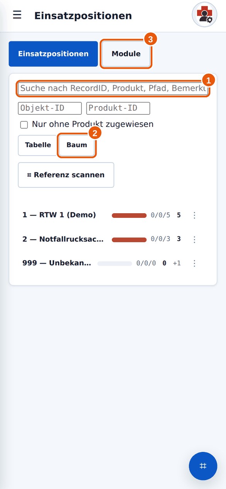
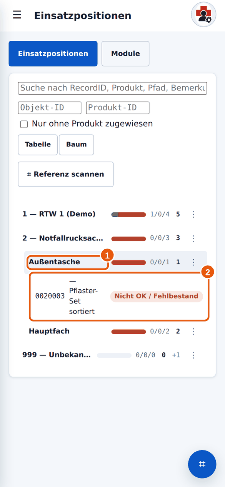

Anleitung 3.1
3.1Einsatzposition finden
Wann brauchst du das? Du willst Material in einem Fahrzeug, Rucksack oder Koffer prüfen.
Kurz gesagtMenü → Einsatzpositionen. Im Baum das Objekt (Fahrzeug, Rucksack) öffnen, dann den Fachbereich, dann die Position. Oder oben suchen oder scannen.
Kurz erklärt: so ist Milan aufgebaut
- Objekt: dein Fahrzeug, Rucksack oder Koffer.
- Pfad: wo darin etwas liegt (zum Beispiel „Seitenfach links“).
- Modul: alle Positionen, die im selben Fach liegen. Module bekommen eine Nummer und ein Etikett zum Scannen.
- Einsatzposition (EP): ein Produkt an einem bestimmten Platz mit Sollbestand, zum Beispiel „Verbandpäckchen groß, Seitenfach links, Soll 5“.
- Tippe im Menü auf Einsatzpositionen. Oben siehst du ein Suchfeld 1, den Schalter Tabelle/Baum 2 und die Reiter Einsatzpositionen/Module 3.

1 Suche, 2 Ansicht, 3 Module. - Im Baum tippst du auf ein Objekt, dann auf einen Fachbereich 1, dann auf die Position 2.

1 Fachbereich, 2 Position. - Die Detailansicht öffnet sich. Oben siehst du den Namen des Produkts, darunter Status und Modul. Mit den Pfeilen ‹ › wechselst du zur nächsten oder vorherigen Position, mit ☰ Positionen öffnest du die Liste.

1 EP-Kontrolle erfassen, 2 Status.
Was die Zahlen im Baum bedeuten
Hinter jedem Objekt und Fach stehen drei Zahlen und eine Balkenanzeige, zum Beispiel „1/0/4“. Die Zahlen zeigen, wie viele Positionen in Ordnung (grün), in Vorwarnung (gelb) oder mit Fehlermeldung bzw. abgelaufen (rot) sind. Die fett gedruckte Zahl daneben ist die Gesamtzahl der Positionen.
Weitere Wege
- Suchen: Gib Produktnamen, Pfad oder die RecordID ein.
- Scannen: Tippe auf Referenz scannen und halte die Kamera auf das Etikett (siehe Scannen).
- Reiter Module: zeigt alle Fächer mit Nummer, Anzahl der Positionen und davon in Ordnung.
Ich finde mein Fahrzeug oder meinen Rucksack nicht.
Prüfe die Suche und ob ein Filter gesetzt ist (Objekt-ID, Produkt-ID, „Nur ohne Produkt zugewiesen“). Entferne Filter, die du nicht brauchst. Ist das Objekt nicht angelegt, sage dem Materialwart Bescheid.
Was ist „999 – Unbekannt“?
Ein Sammelplatz für Einträge, die keinem Objekt zugeordnet werden konnten. Dort musst du nichts tun.